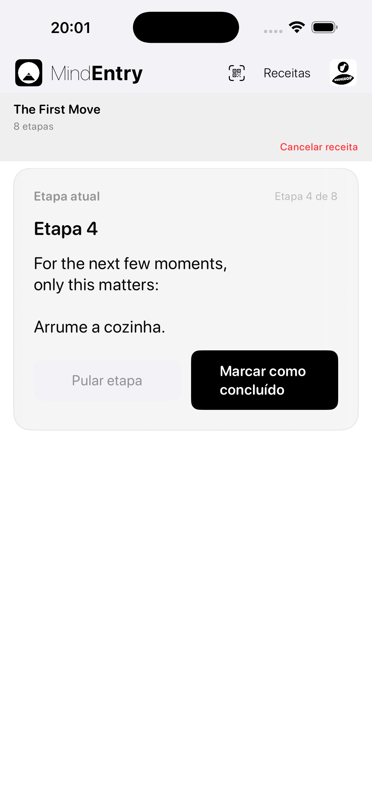
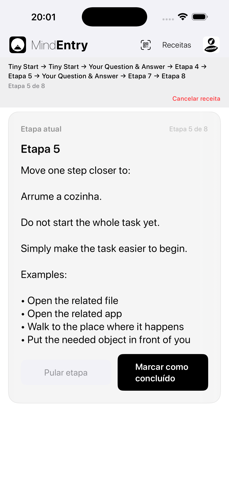
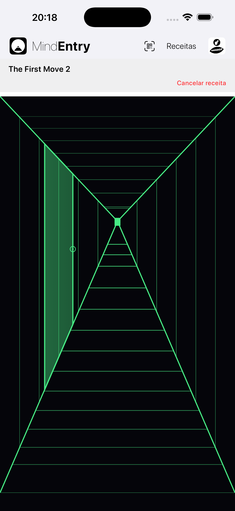
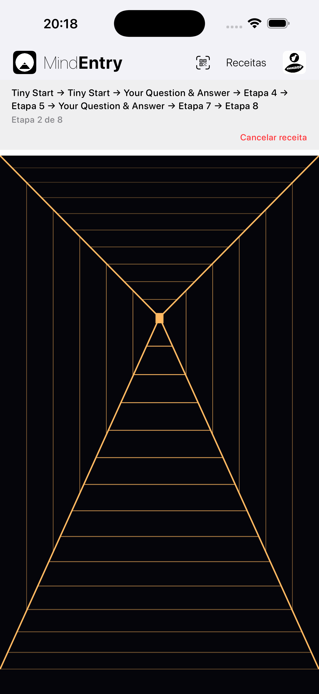

Uma forma diferente de percorrer uma receita.
Hallway Mode é um modo de exibição alternativo para receitas do MindEntry.
Ele não altera a receita em si. Altera a forma como você a percorre.
Em vez de passar diretamente de uma etapa para a próxima, o Hallway Mode cria um espaço tranquilo entre as etapas.
Você avança por um corredor. Após uma curta distância, uma porta aparece. Ao abri-la, você chega à próxima etapa.
A mesma receita. Uma experiência diferente.
Às vezes, a parte mais difícil de uma receita não é a etapa em si. É enxergar tudo como um processo.
O Hallway Mode reduz essa fricção mantendo a atenção apenas no que vem a seguir.
A receita se torna algo que você atravessa, e não algo que apenas observa.
Direto, claro e eficiente.
O Standard Mode apresenta uma receita como uma sequência de etapas.
É ideal quando você deseja o caminho mais simples e rápido através de uma receita.
Etapa → Concluir → Próxima etapa
O Standard Mode é útil quando a mente está pronta para seguir uma estrutura diretamente.


Um espaço tranquilo entre as etapas.
O Hallway Mode adiciona movimento entre as etapas.
O corredor começa sem nenhuma porta visível. Você avança. Após uma curta distância, que varia a cada vez, uma porta aparece. Tocar na maçaneta abre a próxima etapa.
Etapa → Avançar → Porta → Próxima etapa
A próxima porta aparece após alguns movimentos para frente. A distância muda de etapa para etapa, fazendo com que a receita pareça menos uma lista de verificação e mais uma passagem guiada.
Você não escolhe entre várias portas. Você não volta para trás. Você não pula etapas. O corredor simplesmente conduz você ao que vem a seguir.


A mesma etapa pode parecer diferente dependendo de como você chega até ela.
Quando a mente está clara, uma lista pode parecer útil.
Quando a mente está travada, sobrecarregada ou resistente, uma lista pode parecer mais um peso.
O Hallway Mode muda a pergunta de:
Quantas etapas ainda faltam?
para:
Onde está a próxima porta?
Essa pequena mudança pode reduzir a fricção cognitiva.
Em vez de pedir que o usuário administre toda a sequência, o Hallway Mode oferece à mente apenas uma ação simples:
Avançar.
Receitas interativas podem parecer menos um formulário e mais um percurso guiado.
As Stateful Recipes podem responder ao que você insere ou escolhe durante a execução.
No Standard Mode, essa interação pode parecer um fluxo estruturado:
Pergunta → Resposta → Próxima etapa
No Hallway Mode, a mesma interação pode parecer mais uma passagem guiada:
Porta → Pergunta → Avançar → Próxima porta
Isso é importante quando a mente está travada.
Uma mente travada geralmente não precisa de mais opções. Ela precisa de um próximo movimento menor.
O Hallway Mode mantém a receita interativa sem exigir que o usuário mantenha toda a estrutura em mente.
A maioria dos aplicativos se concentra nas próprias etapas.
O Hallway Mode se concentra no espaço entre elas.
Esse espaço permite que a etapa anterior termine antes que a próxima comece.
A receita continua sendo executada no MindEntry. As etapas continuam funcionando da mesma forma. A diferença está em como a mente chega a cada uma delas.
O Hallway Mode não torna uma receita mais fácil removendo etapas.
Ele torna a próxima etapa mais fácil de enfrentar.
Copyright © 2026 MINDBEBOP — All rights reserved.